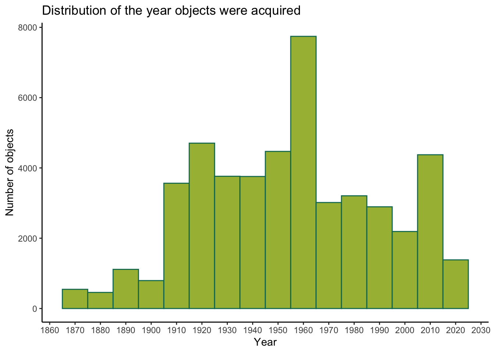

Project Report
As this will be your only chance to describe your project in detail, make sure that your report is a standalone document that fully describes your process and results. We also expect you to write high-quality code that is understandable to an outside reader.
Project Motivation & Related Work
A Familiar Story
Your parents are in town. It’s raining, so your plan to pleasantly stroll through Central Park and watch tourists row backwards on the Lake is squashed. Spurred on by your dad’s claim that he’s “always wanted to see Washington Crossing the Delaware,” you decide on the Met as your alternative activity.
But, after flashing your New York driver’s license at the admissions desk for free entry and entering one of the world’s most esteemed art museums, you discover your next problem: it’s huge. HUGE huge. With more than 600,000 square feet of gallery space, it’s not only the 8th most visited art museum, but also the 4th largest in the world (beaten only by the Louve, the State Hermitage Museum in Saint Petersburg, and the National Museum of China). How can you make sense of this vast collection of art available to you? Where do you start?

Good luck getting from the Temple of Dendur to JMW Turner
Project Motivation
This project was inspired by experiences many of us have had while visiting the Metropolitan Museum of Art, be it as first-time visitors or regular attendees (thanks to pay-as-you-wish entry for NY students). The museum houses some of the world’s greatest art, but its scale, architectural complexity, and never-ending acquisitions make it challenging to get a sense of what the collection actually contains.
Motivated by the intimidating vastness of the Met (and likely, our pride in it as New York City residents), this analysis aims to provide a high-level overview of art at the Met, explore how the museum’s collection has changed over time, visualize the global sources of its works, and dive into one its most well-known departments: Egyptian Art. Our overarching goal is to both help future visitors feel more prepared for a trip to the Met and give those not in New York a sense of its impressive collection from a distance.
Initial Questions
Once we decided to explore The Met with data. We asked these initial questions:
- What does the Met contain?
- Where does art come from across culture, dynasties, time, and beyond?
- How can we explore the Met more easily?
The Met’s data as overwhelming as The Met, we had to narrow down our focus. Although the database contains a lot of data, it also lacked data in certain variables. We decided to work with the variables with the most complete data and developed the following questions:
- What kind of objects does each department hold?
- With Egyptian Art being so popular, what do its objects tell us?
- How has the Met changed over time?
- Where does the art in the Met come from?
Data Collection and Cleaning
Data Source
Since its beginning in 1870, The Metropolitan Museum (The Met) has acquired and displayed over 5,000 years worth of art work from around the world.
Thankfully for us data scientists, The Met offers open access to data of its collection. They did this to encourage interaction with the museum’s collection, and to help people around the world to use the wealth of data they have stored on an impressive number of artefacts. The dataset can be found here, for anyone interested in running their own analyses or reproducing ours.
Generating our Sample
The Met dataset consists of over 400,000 artistic pieces. If you think the Met is overwhelming to get through now - just imagine if all of the artworks in storage were also on display. Sadly a dataset of this size is too much even for us art aficionados, so we decided to divide and conquer (which fittingly is how many of the artifacts from around the world ended up in an American Art Museum).
A dataset of this size is far too big to handle, as any analysis would take an excessively long time to process. Given this scale, we decided that it would be wise to just work with a smaller, more manageable subset of the data.
Using the code below, we took a random sample of 10% of the data,
creating our final dataset of over 40,000 observations. You can use this
code to create the same subset we did from The Met’s raw data file
MetOBjects.txt:
- `set.seed(1)`
- `met_10 <- sample_n(MetOBjects, nrow(MetOBjects)*.10)`
- `save(met_10, file = "data/met_10.RData")`Once we had our 10% sample (amounting to 48,495 observations), we embarked on some data cleaning.
First, we looked into which variables were the most complete.
The following table shows the % completeness for all variables.
Across all observations, object_name and
accession_year were most complete. department
was 100% complete. This informed which analytic questions we could
answer.
met_10 <- met_10 %>%
janitor::clean_names()
data.frame(sapply(met_10, function(x) round(sum(!is.na(x))/nrow(met_10)*100,2))) %>%
magrittr::set_colnames("Completeness")## Completeness
## object_number 100.00
## is_highlight 100.00
## is_timeline_work 100.00
## is_public_domain 100.00
## object_id 100.00
## gallery_number 10.40
## department 100.00
## accession_year 99.28
## object_name 99.55
## title 94.12
## culture 42.74
## period 18.97
## dynasty 4.84
## reign 2.24
## portfolio 5.56
## constituent_id 57.99
## artist_role 57.99
## artist_prefix 57.99
## artist_display_name 57.99
## artist_display_bio 57.55
## artist_suffix 57.98
## artist_alpha_sort 57.99
## artist_nationality 57.99
## artist_begin_date 57.99
## artist_end_date 57.99
## artist_gender 22.12
## artist_ulan_url 46.65
## artist_wikidata_url 46.02
## object_date 97.19
## object_begin_date 100.00
## object_end_date 100.00
## medium 98.54
## dimensions 84.40
## credit_line 99.88
## geography_type 12.50
## city 6.71
## state 0.55
## county 1.72
## country 15.63
## region 6.57
## subregion 4.65
## locale 3.28
## locus 1.61
## excavation 3.45
## river 0.47
## classification 83.66
## rights_and_reproduction 4.87
## link_resource 100.00
## object_wikidata_url 14.30
## metadata_date 0.00
## repository 100.00
## tags 39.78
## tags_aat_url 39.78
## tags_wikidata_url 39.78Based on the missing data table, and our decision to focus on objects and years, we once again limited the dataset to those observations with complete object and year data - resulting in a final analytic dataset with 47,984 observations and 54 variables.
All in all, we chose the following variables to work with:
is_highlight: When “true” indicates a popular and important artwork in the collectiondepartment: Indicates The Met’s curatorial department responsible for the artworkaccession_year: Year the artwork was acquiredculture: Information about the culture, or people from which an object was createdobject_name: Describes the physical type of the objectcountry: Country where the artwork was created or foundsubregion: Geographic location more specific than Region, but less specific than Locale, where the artwork was created or foundobject_begin_date: Date indicating the year the artwork was started to be createdobject_end_date: Date indicating the year the artwork was completeddynasty: Dynasty (a succession of rulers of the same line or family) under which an object was created
Second, we took a closer look at the variables of interest.
We noticed that the values in object_name were far too
detailed for our purpose. For example, who needs to differentiated
between a relief fragment from the Tomb of Maketre and a relief
fragment form the Tomb of Nespekashuty? If you want to, don’t
run this code. But we consolidated object types, like reliefs,
to create better summaries.
met <- met %>%
mutate(object_name = ifelse(
grepl("Textile", object_name), "Textile",
ifelse(grepl("Painting", object_name), "Painting",
ifelse(grepl("Relief", object_name), "Relief",
ifelse(grepl("Print", object_name), "Print",
ifelse(grepl("aseball card", object_name), "Baseball card",
ifelse(grepl("Vase", object_name), "Vase",
ifelse(grepl("rnament", object_name), "Vase",
ifelse(grepl("arring", object_name), "Earring",
ifelse(grepl("ecklace", object_name), "Necklace",
ifelse(grepl("hotograph", object_name), "Photograph",
ifelse(grepl("tatue", object_name), "Statue",
object_name))))))))))))Yet, as we transported ourselves to Ancient Egypt and the Met’s many
excavations in the area, we had to take some additional steps to dust
off the data without hurting the artifacts. Dynasty was a
key variable for the Egyptian data, as the Egyptian Art Department is
the only Department in the Met to have fairly well-identified Dynasties,
we felt it was important to include it. However, instead of keeping to
the traditional 30 Dynasties of Egypt, many of the observations were
coded as “Dynasty 1-5” or “second half 11.” We deep cleaned the table.
Strategy was that if a Dynasty was easily identifiable from the name
then we recoded the value to said Dynasty, if the value was of a
consecutive dynasty ex: “Dynasty 12-13” then we kept the value as said
Dynasty but only if that specific value was common in the data
(n>20). This was to prevent having 50+ dynasty ranges and making
visualization tedious. Moreover, for larger Dynastic Ranges (or low
artifact count consecutive dynasties) these were just recoded as Dynasty
Range. Any other values were coded as NA.
Some other minor cleaning of the Egyptian data also occurred for object creation dates.
Exploratory Analysis
Department digging
As we explored the many departments at The Met, the department with the most objects is Drawings and Prints with 4 times as many objects as the next department! (Interestingly enough, works on paper can only be in exhibition ~3 months at a time due to their fragility.) Yet that changes when looking at the most highlighted objects, or popular pieces of artwork, as the department with the most highlighted number of objects is The American Wing. Close behind The American Wing, Asian Art comes in second with the most highlighted objects.
met |>
count(department) |>
mutate(department = fct_reorder(department, n)) |>
plot_ly(x = ~department, y = ~n, color = ~department, type = "bar", colors = mypal) |>
layout(title = 'Department by number of objects',
xaxis = list(title = 'Department'),
yaxis = list(title = 'Number of Objects'),
showlegend = FALSE)met |>
filter(is_highlight == TRUE) |>
count(department) |>
mutate(department = fct_reorder(department, n)) |>
plot_ly(x = ~department, y = ~n, color = ~department, type = "bar", colors = mypal) |>
layout(title = 'Department by number of highlighted objects',
xaxis = list(title = 'Department'),
yaxis = list(title = 'Number of Highlighted Objects'),
showlegend = FALSE)As we explore each department and the objects they hold, we find that Drawings and Prints mostly contains drawings and prints (no surprise there). In Drawings and Prints, prints has more than triple the number of objects than the other objects. Photographs also mainly contains photographs (again, not shocking and 3 times the number of objects compared to the other objects). The most common object was a piece in both Asian Art and European Sculpture and Decorative Arts.
Unlike any other department, Greek and Roman Art mostly contains Kylix fragments (nearly 8 times any other object!). Kylix fragments, or vessels, are specific to Greek and Roman culture. Again, unlike any other department, the Egyptian Art department has objects like reliefs, or painted scenes, and scarabs, or beetle shaped amulets, specific to Egyptian culture.
The only department with only two types of objects (paintings and drawings) was European Paintings. Finally, let’s discuss a collection close to us at CUMC: The Cloisters. This collection mostly contains panel, Pilgrim’s badge, and capital. Most of the art displayed at The Cloisters is in fact part of The Medieval Art department.
Trends analysis
As The Met’s collection contains many unknown or NA values, we
decided to use the variables with the most complete data. We also
decided that the best way to depict the Met would be with visuals worthy
of being in the Met itself. Because The Met’s database mainly contained
categorical variables, we mainly focused on the quantity of objects,
cultures, and object types. We made sure to use the one continuous
variable we had (accession_year) to depict the Met over
time.
When browsing through The Met dataset, we immediately noticed the
completeness of the year variable, accession_year, which
represents the year that a specific object was acquired by the museum.
The following plot shows the distribution of acquisition years in our
data - quite impressive!
ggplot(met, aes(x = accession_year)) +
geom_histogram(color = "#0B775E", fill = "#a7ba42", binwidth = 10) +
scale_x_continuous(breaks = seq(1860, 2030, by = 10)) +
labs(title = "Distribution of the year objects were acquired",
y = "Number of objects",
x = "Year") +
theme_classic()
Growth over time
This prompted us to take a deeper dive and look at the growth over time by department. For example, did all of them have a spike in object acquisitions in the 1960s and 2010s? For this, we build an interactive plot which you can also find in Exhibit C: The Met’s Growing Collection.
met %>%
group_by(accession_year, department) %>%
summarize(n = n()) %>%
ungroup() %>%
arrange(department) %>%
plot_ly(
x = ~accession_year, y = ~n, type = 'scatter', mode = 'lines',
alpha = .9, color = ~department, colors = mypal,
hoverinfo = 'text',
text = ~paste("</br> Department: ", department, "</br> Year: ", accession_year, "</br> Number of objects: ", n)) %>%
layout(title = "Number of objects acquired by department over time",
xaxis = list(title = "Year"),
yaxis = list (title = "Number of objects",
tickformat=","),
showlegend = FALSE)Now, we can hover over or zoom into parts of the trend line that look interesting. For example, what happened in 2011 with Greek and Roman Art? A google search revealed nothing, so maybe it was just a particularly productive year for that department’s curator. More interestingly, however, is the year 1963, in which the department of Drawings and Prints acquired over 4,000 objects.
What happened in the Drawings and Prints department in 1963?
Well, first we searched the world wide web. Turns out, the Mona Lisa was added to The Met in 1963!
A crowd forms around the Mona Lisa (1963)
But that can’t be the reason for the uptick in objects acquired. The Mona Lisa is just one painting.
If we take a look at the top 10 artists in that department in that year, we see that many are not individual people at all - they are almost all related to tobacco companies.
met %>% filter(accession_year == 1963 & department == "Drawings and Prints") %>% group_by(artist_display_name) %>% summarize(n = n()) %>% arrange(desc(n)) %>% slice_max(n, n=10)## # A tibble: 10 × 2
## artist_display_name n
## <chr> <int>
## 1 <NA> 515
## 2 Kinney Brothers Tobacco Company 432
## 3 Allen & Ginter 305
## 4 W. Duke, Sons & Co. 291
## 5 Goodwin & Company 262
## 6 American Tobacco Company 220
## 7 Exhibit Supply Company 165
## 8 William S. Kimball & Company 116
## 9 W. Duke, Sons & Co.|Knapp & Company 95
## 10 Turkish Trophies Cigarettes 76Pretty interesting since the National Institutes for Health released their report on Smoking and Health in 1964! It must have been a hot topic in 1963.
Big years at The Met
This led us to explore not just trends in object acquisitions, but also “big” years in The Met’s history. With a little data wrangling, we were able to identify three types of standout years, by department: 1. When it had the highest number of objects 2. When it represented the highest number of unique cultures 3. When it represented the highest number of (known) woman artists
We created three plots to visualize these “big” years across departments. It turned out each department at the Met has quite the different story.
Departments at their largest
In which year did each department have the most growth?
met %>%
group_by(department, accession_year) %>%
summarize(n = n()) %>%
select(department, accession_year, n) %>%
group_by(department) %>%
slice(which.max(n)) %>%
arrange(department) %>%
plot_ly(
y = ~n, x = ~accession_year, type = "scatter", mode = "markers",
size = ~I(n*1.5), alpha = .9,
color = ~department, colors = mypal,
hoverinfo = 'text',
text = ~paste("</br> Department: ", department, "</br> Year: ", accession_year, "</br> Number of objects: ", n)) %>%
layout(xaxis = list(title = "Year"),
yaxis = list (title = "Number of objects",
tickformat=",")) %>%
hide_legend()This plot is not too surprising since it shows more clearly what we were interpreting from the trend lines. But now we can see that three departments have had more recent growth: Greek and Roman Art, the Costume Institute, and Photographs. Maybe we should hurry over to those departments on our next Met visit.
Departments at their most culturally diverse
In which year was each department most representative of cultures from around the world?
met %>%
filter(!is.na(culture)) %>%
mutate(culture = str_remove(culture, "possibly "),
culture = str_remove(culture, "probably ")) %>%
group_by(department, accession_year, .drop=FALSE) %>%
summarize(n = n_distinct(culture)) %>%
select(department, accession_year, n) %>%
group_by(department) %>%
slice(which.max(n)) %>%
arrange(department) %>%
plot_ly(
y = ~n, x = ~accession_year, type = "scatter", mode = "markers",
size = ~I(n*1.5), alpha = .9,
color = ~department, colors = mypal,
hoverinfo = 'text',
text = ~paste("</br> Department: ", department, "</br> Year: ", accession_year, "</br> Number of cultures: ", n)) %>%
layout(xaxis = list(title = "Year"),
yaxis = list (title = "Number of cultures",
tickformat=",")) %>%
hide_legend()Interestingly, departments have not peaked in their representation-factor in recent years. Most were most diverse between the years of 1880 and 1980. But once again, the Costume Institute is looking the most interesting for a present-day visit…
Departments at their most representative of women artists
In which year was each department most representative of women artists?
Note: our data issue in this chart is that for many objects, gender of the artist is unknown! This table shows the proportion of objects with known (men, women) and unknown genders:
met %>% select(artist_gender) %>%
mutate(Gender = ifelse(is.na(artist_gender), "Unknown",
ifelse(grepl("Female", artist_gender), "Women", "Men"))) %>%
janitor::tabyl(Gender) %>%
janitor::adorn_pct_formatting(rounding = "half up", digits = 0)## Gender n percent
## Men 9156 19%
## Unknown 37418 78%
## Women 1410 3%Sadly, we don’t know the artist’s gender for 78% of objects. Nonetheless, we wanted to see, among those objects with gender information, which departments were centering women artists and when. We expect, however, that these data reflect more modern eras in which it would have been easier to discern details about the artist.
met %>%
filter(!is.na(artist_gender)) %>%
mutate(woman = ifelse(grepl("Female", artist_gender), 1, 0)) %>%
group_by(department, accession_year) %>%
summarize(n_woman = sum(woman)) %>%
select(department, accession_year, n_woman) %>%
group_by(department) %>%
slice(which.max(n_woman)) %>%
arrange(department) %>%
plot_ly(
y = ~n_woman, x = ~accession_year, type = "scatter", mode = "markers",
size = ~I(n_woman*2), alpha = .9,
color = ~department, colors = mypal,
hoverinfo = 'text',
text = ~paste("</br> Department: ", department, "</br> Year: ", accession_year, "</br> Number of objects: ", n_woman)) %>%
layout(xaxis = list(title = "Year"),
yaxis = list (title = "Number of objects by women",
tickformat=",")) %>%
hide_legend()Once again, the Costume Institute has been the most impressive! We think we know exactly which department we’re going to first.
Mapping
Special deep-dives
Entering into the data analysis of the Egyptian Art Department,
dynasty was identified as the most important variable to
focus on. The Egyptian Arts Department is unique among Met Collections
in that for art of its age, it is far more complete information wise
than other contemporary regions. Nevertheless, many of these artifacts
were 3000 to 4000 years old, so the data was not perfect. As such, a
focus on dynasty required a high amount of data cleaning as
described above. Many artifacts that could be roughly placed timeline
wise needed to be placed into the overfill category due to lack of
specificity.
Because Dynasty was considered so central to our understanding of
Ancient Egyptian Art - Dynasty represent the political periods of Egypt,
so we theorized they would have a large impact of the art of the time -
we created a Shiny Dashboard whose reactive elements responded to Check
Box dynasty selections.
https://geodata.lib.utexas.edu/catalog/stanford-bb409wq6265
library(sf)
shape_file <- st_read(“data/EGY_adm1.shp”)
World Map
As a group, we aimed to illustrate the original countries of the items in the MET. In order to that we decided that we will count the total number of items per country and will create a map so that everyone can access it see how many items originated from which country. In addition to that, we wanted to show the top 20 countries since the data is big and it is not possible to show every country. Also, we wanted report the items without certain country or missing variables.
Data cleaning for the world map started with merging out cleaned met
data with the world data from rnaturalearth package. This
world data contains information about countries and locations such as
longitudes and latitudes. However, after merging, it has come to our
attention that our country variable in our data need some
more cleaning. Some of the Countries were not recorded as the same
format in world data. This difference created more missing data on
countries and total number of objects. In order to fix that, we changed
the name of the countries in our met data to be the same as the name of
the countries in the world data. We also created another merged data
that contains the data with the countries that did not match the names
in the world data.
The MET Floor Maps including The Cloisters
In order to show the total object numbers in different departments,
we decided to create a floor maps that shows different departments.
Although The Cloisters are not in the MET Upper East Side
location, we wanted to create a map for The Cloisters
because our explatory analysis showed that it was one of the departments
with least object. In order to create maps for each floor including
The Cloisters, we accessed longititudes and latitutes of
each departments’ location using the map inside the MET website (https://maps.metmuseum.org/?screenmode=base&floor=1&search=costume%20ins&feature=LTczLjk2MjEsNDAuNzgwM0BwaW5ANzk3ODc2MDA1ODg%3D#hash=18.24/40.780237/-73.962081/-61
). We only created the maps for the first, second, and G floor because
those were the floors that included the departments that we are
interested in. We added total number of objects in our maps so that
visitors can decide which department they want to prioritize when they
are planning their trip.
Discussion
Findings and Conclusions
We found that objects varied department to department. Some departments were very specific to a culture (such as Egyptian Art and Greek and Roman Art). Other departments are more specific to a specific kind of object (such as Drawings and Prints and European Paintings). The largest department by far is Drawings and Prints with over 17k of objects (in our 10% sample, meaning even more owned by The Met!). The Cloisters being the smallest department as it is a different museum branch.
Since Drawings and Prints is located on the first floor, the visitors might spend more time there. In terms of the distribution of culture oriented(such as Egyptian Art and Greek and Roman Art) or object oriented departments(such as Drawings and Prints and European Paintings), they spread around in the first and second floor mostly. Floor G only includes two departments ( Robert Lehman Collection and Costume Institute), however Costume Institute offers a big collection.
In addition, our analysis showed that the country with the most
objects is Egypt. After Egypt, most of the
items are from United States, Iran,
Peru and Mexico. 93 items in the MET
collection is uncertain, indicating that these items were recorded as
being from two or three countries, or the experts were unsure about the
specific country, providing multiple possibilities. Some items were
recorded as belonging to two or more countries, which proves that border
changes throughout the history affected the where the art belonged.
40840 items in the MET have missing country variables.
Challenges
Our biggest challenge was working with such a large database (solved by taking a 10% sample) and largely working with categorical variables. There was only so much that can be done in terms of graphs due to the nature of the data. We felt that visuals were the most important way to showcase The Met and leaned into not only bar and line graphs but also mapping.
Creating maps with The MET data was challenging because some of the
countries were not recorded well. In same cases, the records include old
country names or designate certain territories as countries, or they
were coded as a region of a country. Since the data is mostly
categorical, we were limited at what to include in the map. The
variables that we were interested in including our analysis were
culture, reign, dynasty,
is_highlight, accession_year,
object_name, subregion,
subregion, and object_end_date. The only
variables that we could use in our maps were the country
and object_name.
Limitations and Future Challenges
Some limitations may include not using the true size of The Met Open Access data.
For the future, we would like to see how British Museum is compared to The MET. We think that it would be so interesting to compare these two museums. Another future challenge might be comparing the top five most visited museums such as Louvre(Paris), Vatican Museums(Vatican City), Natural History Museum(London), British Musem(London), Natural Museum of Natural History(Washington DC). In addition, New York City Museums such as the MET, American Museum of Natural History, MOMA, and Solomon R. Guggenheim Museum can be compared in terms of visitors, ticket purchases, and frequency of visitors in different seasons.
Group Members
The following students collaborated on this site and report:
- Aleya Khalifa (ak4598)
- Andy Turner (ajt2206)
- Diana Hernandez (dmh2228)
- Emily Murphy (erm2195)
- Jennifer Osei (jao2195)
- Melike Aksoy (mma2277)